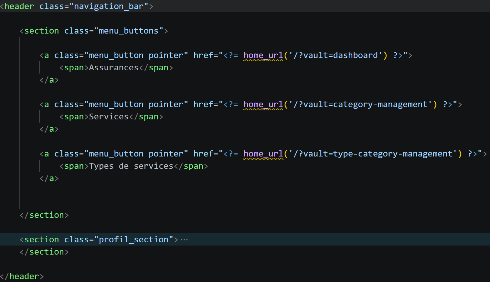
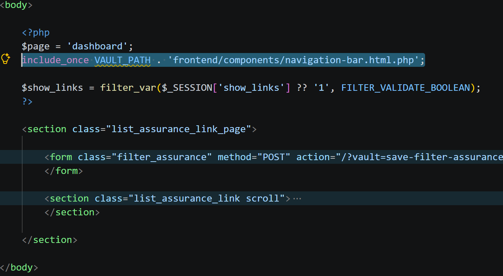

Jolan BERTIN S4A1
jolan.bertin@edu.univ-fcomte.frSavoir-faire techniques
Cette partie permet de présenter et évaluer les savoir-faire techniques employés durant mon stage.
Coder intelligemment : utilisation de composants en PHP

Savoir-faire élémentaires : S'auto-former sur de nouveaux langages et outils et Structurer le développement d'une application web et coder intelligemment .

Trace 5 : Code de la barre de navigation présente sur l'application webAvant de commencer à coder, et après m'être informé et formé sur le langage PHP et la possibilité d'importer des bouts de code , j'ai réfléchi aux différents composants qui pouvaient être créés et réutilisés pour rendre le code plus lisible et éviter les copiers-collers :
- - les boutons de validation de formulaire : comme rechercher/réinitialiser pour les filtres, les
boutons d'ajout d'assurances et de services, ... ,
- - l'en-tête des pages de code,
- - les différentes barres de navigations (dont le code de l'une d'elle est la trace 5),
- - ou le pop-up en cas de suppression d'information qui demande une validation pour éviter que des
clics
puissent par erreur supprimer de l'information.
De plus, dans cette trace 5, on peut voir que les insertions de PHP dans le code (entre < ?=...=> ) contiennent des syntaxes propre à WordPress ( home_url() ). Ces syntaxes étant nouvelles pour moi (PHP et WordPress), j'ai du me renseigner sur leur utilisation afin de mener à bien la mise en place de l'application.

Trace 6 : Code de la page de filtre des assurancesSur la trace 6, la ligne en surbriance permet d'importer via du PHP le composant de la barre de navigation (trace 5) dans la page principale du site, celle qui répertorie les différentes assurances.
Ces composants permettent aussi de rendre le code général de l'application plus aéré. Ainsi que de plus facilement accéder et modifier ces bouts de code de façon individuelle en cas de problème.